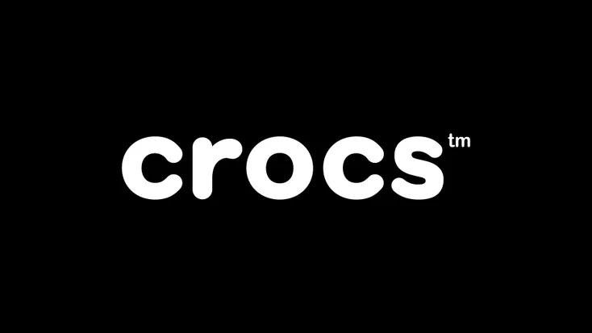
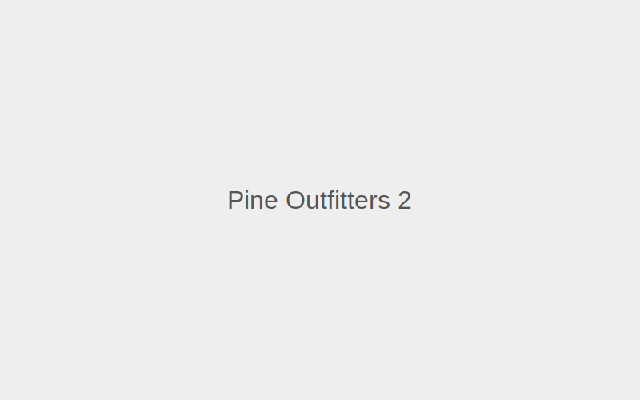
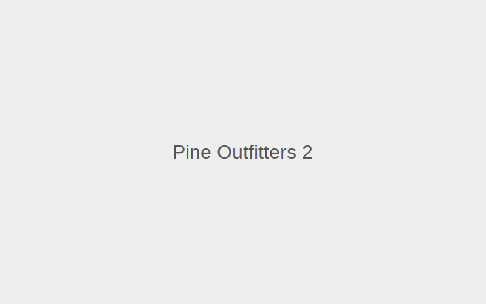

Crocs

Crocs
Clothing
Crocs footwear can be found across the country and in various shopping centres in Cape Town, including Canal Walk. This brand stands for innovation, fun and comfort. Let your feet walk in style when you purchase any of their funky shoe options for men, women and children. Their products are distinct in looks, comfortable, lightweight, non-marking and odour-resistant, and they're perfectly equipped for any occasion or season.
 

Location: G7
Hours: Mon–Sun 09:00–20:00